progit学习笔记
本文是progit的学习记录。
关键词：git
介绍
略。
安装
略。
初次运行Git前的配置
git config用来帮助设置控制Git的外观和行为的控制变量。这些变量存在三个不同位置：
/etc/gitconfig：包含系统上每一个用户以及他们的仓库的通用配置。传递--system选项让Git读写此文件。~/.gitconfig或~/.config/git/config：只针对当前用户。传递--global选项让Git读写此文件。- 当前使用仓库的Git目录的
.git/config文件，只针对该仓库。
每一个级别覆盖上一级别的配置。即当.git/config文件存在时，不读取其他文件，以此类推。
window中会查找
$HOME目录下（一般是C:\\Users\\$USER）的.gitconfig文件。Git同样会寻找
/etc/gitconfig文件，但是只限于安装Git时所选的目标位置。
用户信息
设置用户名和邮件地址
1 | git config --global user.name "wf09" |
使用了--global选项则该命令只需要运行一次。
文本编辑器
默认使用操作系统默认的文本编辑器，通常是Vim
1 | git config --global core.editer vim |
设置代理
这里的代理分为两种，一种是https/http
1 | # 全局 |
另外一种是ssh协议的代理
Linux/Unix环境下，在~/.ssh/config文件下加入如下行
1 | Host github.com *.github.com |
其中nc -x后面跟的是socks5的代理地址
Windows环境下，在
C:\User\$USER\.ssh\config文件下加入如下行
1 | Host github.com *.github.com *coding.net |
其中connect -S后面跟的是socks5的代理地址
检查配置信息
1 | $ git config --list |
可能会看到重复的用户名，因为Git会在不同的文件中读取同一个配置（例如：/etc/gitconfig和~/.gitconfig。后一个配置会覆盖前一个配置。
可以用过git config <key>来检查Git的某一项配置。
1 | git config user.name |
git基础
获取Git仓库
初始化仓库
1 | git init |
克隆现有仓库
1 | git clone https://github.com/git/git.git |
记录每次更新到仓库
请注意，工作目录下的每一个文件不外乎两种状态：已跟踪或未跟踪。其中已跟踪的文件是指那些被纳入了版本控制的文件，在上一次快照中有他们的记录。他们的状态可能处于未修改，已修改或已放入暂存区。工作目录中除了已跟踪文件目录以外的其他所有文件都属于未跟踪文件，他们既不存在于上次快照的记录中，也没有放入暂存区。初次克隆某个仓库时，工作目录中的文件都属于已跟踪文件，并且处于未修改状态。
编辑过某些文件后，由于自上次提交后你对他们做了修改，Git将他们标记为已修改文件。将这些修改过的文件放入暂存区，然后提交所有暂存了的修改，如此反复，所以使用GIT时文件的生命周期如下：
检查当前文件状态
1 | $ git status |
在状态报告中可以看到新建的progit学习笔记.md文件和progit学习笔记/出现在Untracked files下面。未跟踪的文件意味着Git在之前的快照（提交）中没有这些文件；Git不会自动将其纳入跟踪范围，除非你明明白白的告诉他需要跟踪该文件。
跟踪新文件
1 | $ git add source/_posts/progit学习笔记.md |
此时在运行git status命令，会看到上面的文件已被跟踪，并处于暂存的状态
1 | $ git status |
只要在Changes to be committed这一行下面的，说明是已暂存的状态，如果此时提交，那么该文件此时的版本将会被留在历史记录中。
git add命令使用文件或者目录的路径作为参数，如果是目录的参数，该命令递归的跟踪该目录下的所有文件。
暂存已修改文件
修改一个已经被跟踪的文件，然后运行命令，就会看到上面所示的内容：
文件source/_posts/progit学习笔记.md同时出现在出现在暂存区和非暂存区。此时Git只暂存了你运行的git add命令似的版本，如果现在提交，source/_posts/progit学习笔记.md版本是最后一次运行git add命令似的版本，而不是执行git commit时工作目录的版本。需要继续运行git add把最新版本重新暂存起来：
1 | $git add . |
git add .表示将所有修改过的文件移动到暂存区。
git add是一个多功能命令：
- 可以开始跟踪新文件
- 可以把已跟踪的文件放到暂存区
- 合并时把有冲突的文件修改为已解决状态等。
应该将git add命令应理解为添加内容到下一次提交中而不是将一个文件添加到项目中。
状态简览
git status命令的输出十分详细。使用git status -s命令或者git status --short命令将得到一种更为紧凑的格式输出：
1 | $git status -s |
未被跟踪的文件有??标记，新添加到暂存区中文件有A标记，修改过的文件有M标记。
出现靠左边的M表示该文件被修改了并放入到了暂存区；出现在靠右边的M表示该文件被修改了但是还没放到ss暂存区。
和我实际操作的不一致。貌似版本原因。如果一个文件在工作区中被修改并提交到暂存区后又在工作区中被修改，文件前面的标记应该是AM，而不是上文中的MM。
忽略文件
创建一个.gitignore的文件，列出要忽略的文件模式
1 | $ cat .gitignore |
第一行告诉Git忽略所有.o或者.a结尾的文件。一般这类对象文件和存档文件都是编译过程中出现的。
第二行告诉Git忽略所有以波浪符号~为结尾的文件。通常这是用来保存文件副本的。
此外可能还需要需要忽略log，tmp或者pid目录，以及自动生成的文档等。
.gitignore的格式规范如下：
- 所有空行或以
#开头的行都会被git忽略； - 可以是由标准的
glob模式进行匹配； - 匹配模式可以以
/开头防止递归； - 匹配模式可以以
/结尾制定目录 - 要忽略制定模式意外的文件或目录，可以在模式前面加上 感叹号(!)并取反。
glob模式是shell所使用的简化的正则表达式：
- 星号（*）匹配零个或者多个任意字符；
- [abc]匹配任意一个在方括号中的字符，这个例子要么匹配一个a，要么匹配一个b，要么匹配一个c；
- 问号（?）只匹配一个任意字符；
- 如果在方括号内使用短划线分割两个字符，表示所有在这两个字符范围内的都可以匹配（比如[0-9]匹配所有0到的数字）；
- 使用两个星号（*）表示匹配任意中间目录，如
a/**z可以匹配a/z,a/b/z,a/b/c/z等
一个.gitignore文件的例子：
1 | # no .a files |
查看已暂存和未暂存的修改
1 | git status |
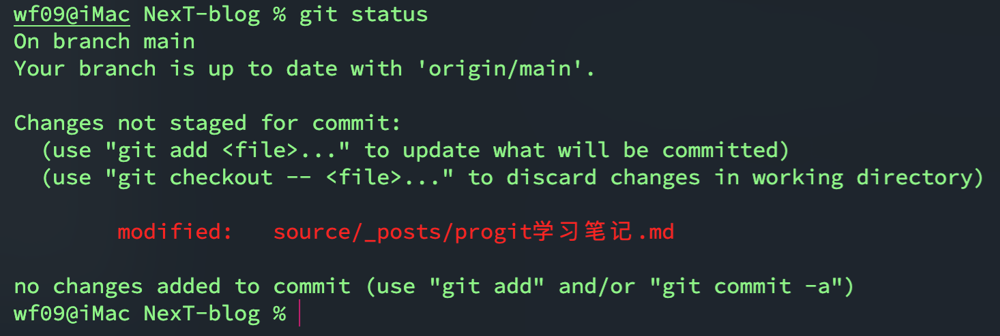
要查看尚未暂存的文件更新了那些部分，直接输入
1 | git diff |
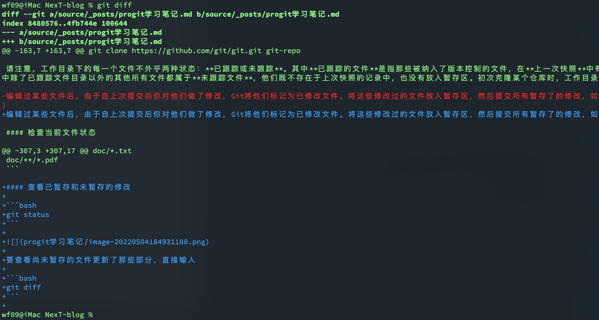
此命令用来比较工作目录中当前文件和暂存区域快照之间的差异，也就是修改之后还没有暂存起来的变化内容。
若要查看已暂存的将要添加到下次提交里的内容，可以用如下命令，该条命令将比对已暂存的和最后一次提交的文件差异：
1 | git diff --staged |
git diff本身只显示尚未暂存的改动，而不是自上次提交以来所做的所有改动。
提交更新
交互方式提交更新
1
git commit
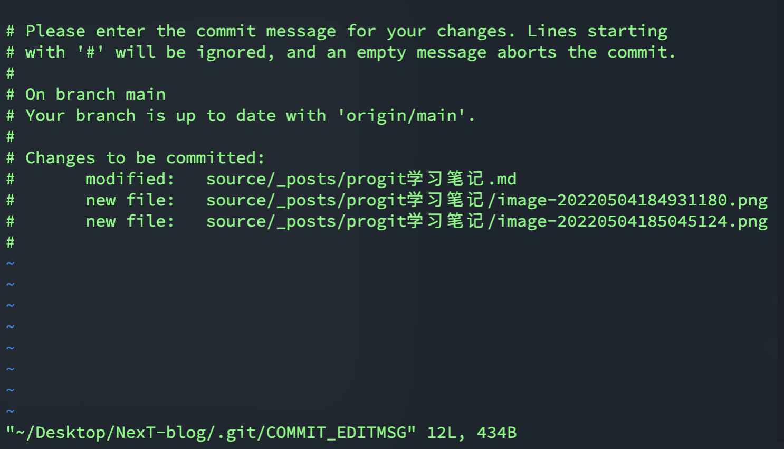
将提交信息和命令放在同一行
1 | git commit -m "update progit学习笔记" |
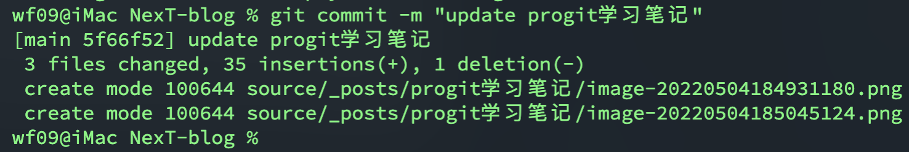
可以看到，当前是在那个分支（main）提交的，本次提交的完整的SHA-1校验和5f66f52
，有三个文件修订过，有35行添加并且有一行删改。
提交时记录的是放在暂存区的快照，任何还未暂存的文件仍然保持已修改状态，可以在下次提交的时候纳入版本管理。
每提交一次，都是对项目做一次快照，以后可以回到这个状态，或者进行比较
跳过使用暂存区
自动把已经跟踪过的文件暂存起来一并提交
1 | git commit -m "update message" -a |
移除文件
从暂存区移除，并连带从工作目录中删除指定的文件
1 | git rm file |
从暂存区移除，但仍保留在当前目录
1 | git rm --cached file |
git rm命令后面可以列出文件或者目录的名字，也可以使用glob模式。注意*号后面的反斜杠\.
1 | git rm log/\*log |
以上命令将删除log/
目录下所有拓展名为.log的所有文件。
移动文件
1 | git mv file_from file_to |
相当于运行了以下命令
1 | mv file_from file_to |
查看提交历史
1 | git log |
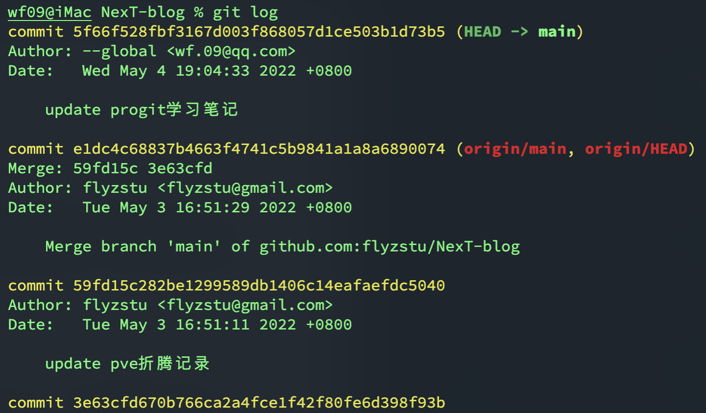
- 在不传任何参数的默认情况下，
git log会按照时间先后顺序列出所有的提交，最近的更新排在最上面。
按补丁的格式显示最近1次提交引入的差异
1 | git log -p -1 |
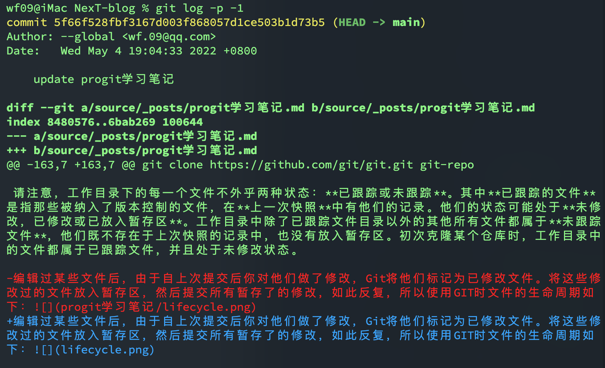
查看每次提交的简略统计信息
1 | git log --stat |
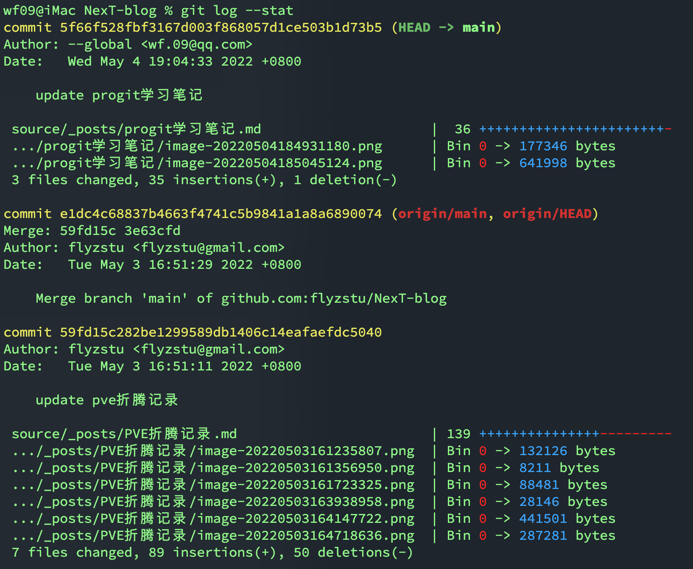
--stats选项在每次提交的下面列出了所有被修改过的文件、有多少文件被修改了一集被修改文件的那些行被移除了或者添加了。
将commit消息显示为一行
1 | git log --pretty=oneline |
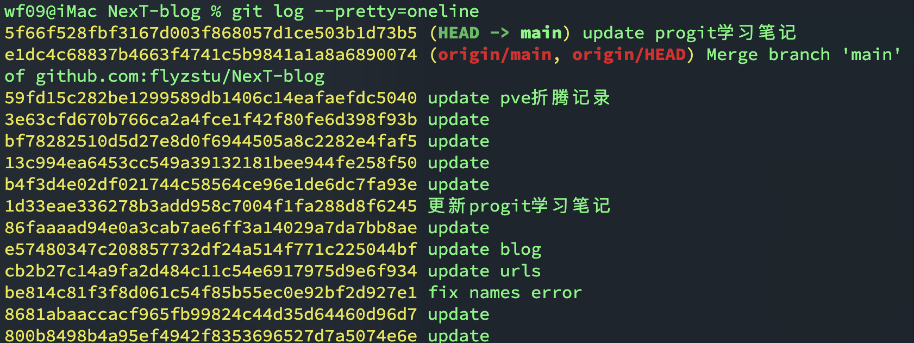
也可以只显示sha1校验和的前几位
1 | git log --oneline |
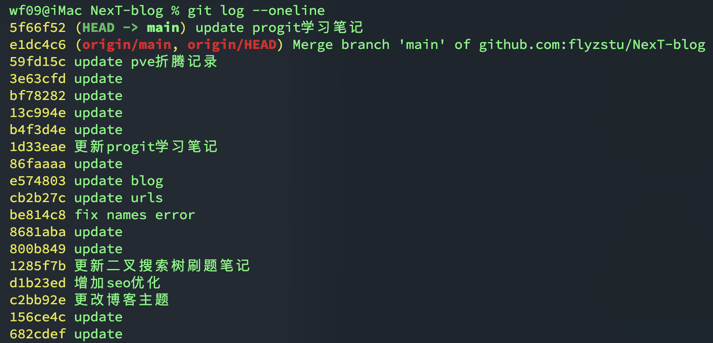
定制格式显示提交历史
1 | git log --pretty=format:"%h - %an, %ar : %s" |
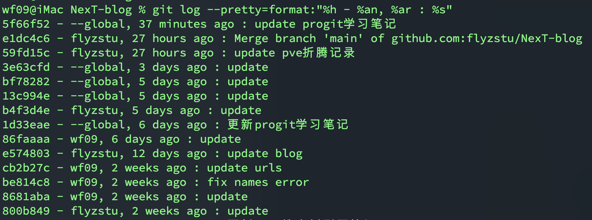
以下是--pretty的常用选项
| 选项 | 说明 |
|---|---|
%H |
提交对象（commit）的完整哈希字串 |
%h |
提交对象的简短哈希字串 |
%T |
树对象（tree）的完整哈希字串 |
%t |
树对象的简短哈希字串 |
%P |
父对象（parent）的完整哈希字串 |
%p |
父对象的简短哈希字串 |
%an |
作者（author）的名字 |
%ae |
作者的电子邮件地址 |
%ad |
作者修订日期（可以用 --date= 选项定制格式） |
%ar |
作者修订日期，按多久以前的方式显示 |
%cn |
提交者（committer）的名字 |
%ce |
提交者的电子邮件地址 |
%cd |
提交日期 |
%cr |
提交日期，按多久以前的方式显示 |
%s |
提交说明 |
- 作者是实际作出修改的人，提交者指的是最后将此工作成果提交到仓库的人
online或format与另一个选项--graph结合使用，可以清晰的展示你的分支、合并历史
1 | git log --pretty=format:"%h %s" --graph |
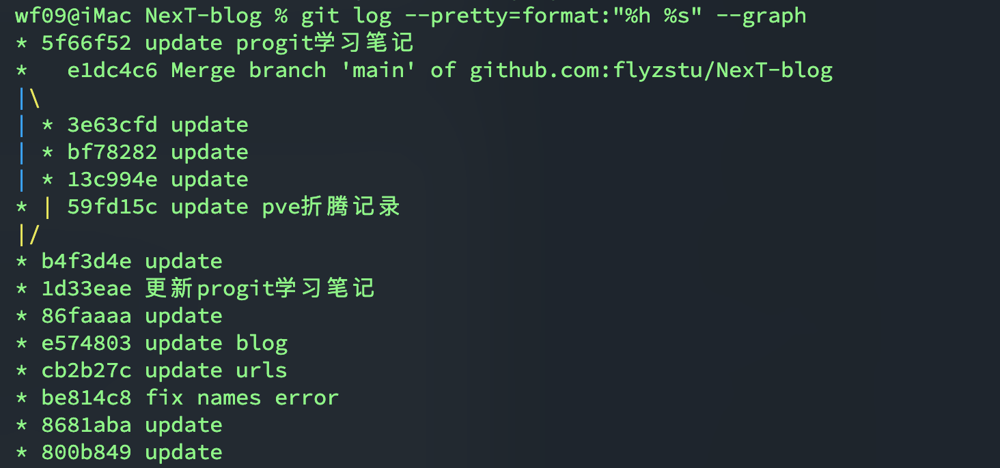
以下是git log的常用选项
-p |
按补丁格式显示每个更新之间的差异。 |
|---|---|
--stat |
显示每次更新的文件修改统计信息。 |
--shortstat |
只显示 --stat 中最后的行数修改添加移除统计。 |
--name-only |
仅在提交信息后显示已修改的文件清单。 |
--name-status |
显示新增、修改、删除的文件清单。 |
--abbrev-commit |
仅显示 SHA-1 的前几个字符，而非所有的 40 个字符。 |
--relative-date |
使用较短的相对时间显示（比如，“2 weeks ago”）。 |
--graph |
显示 ASCII 图形表示的分支合并历史。 |
--pretty |
使用其他格式显示历史提交信息。可用的选项包括 oneline，short，full，fuller 和 format（后跟指定格式）。 |
限制输出长度
-<n> 选项的写法，其中的 n
可以是任何整数，表示仅显示最近的若干条提交。
限制输出时间
列出所有最近两周内的提交
1 | git log --since=2.weeks |
列出5天之前的提交
1
git log --until 5.days
时间可以是具体的某一天
"2008-01-15"，也可以是相对时间
"2 years 1 day 3 minutes ago"。
筛选commit作者
1 | git log --author wf09 |
筛选commit关键字
1 | git log --grep update |
筛选添加或移除了某些字符串的提交
1 | git log -Supdate |
筛选某些文件和目录的历史提交
1 | git log <file_name> |
以下是限制git log输出的选项
| 选项 | 说明 |
|---|---|
-(n) |
仅显示最近的 n 条提交 |
--since,
--after |
仅显示指定时间之后的提交。 |
--until,
--before |
仅显示指定时间之前的提交。 |
--author |
仅显示指定作者相关的提交。 |
--committer |
仅显示指定提交者相关的提交。 |
--grep |
仅显示含指定关键字的提交 |
-S |
仅显示添加或移除了某个关键字的提交 |
撤销操作
提交后发现忘记了暂存某些需要的修改，可以像下面这样操作
1 | git commit -m "commit message" |
最终会只有一个提交，第二次提交的结果会代替第一次提交的结果。
取消暂存的文件
1 | git reset HEAD [filename] |
忽略文件名就是取消所有暂存的文件
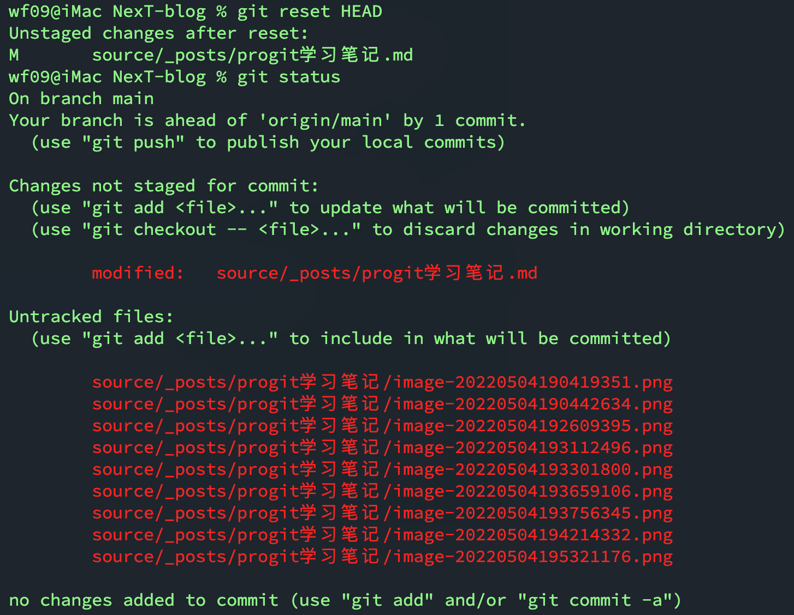
- 不加选项的执行
git reset只会修改暂存区域 --hard选项会丢失工作区的更改！
撤销对文件的更改
还原到上次提交的状态
1 | git checkout -- [filename] |
注意：git checkout --会完全撤销对当前文件的更改，和
git reset --hard选项类似